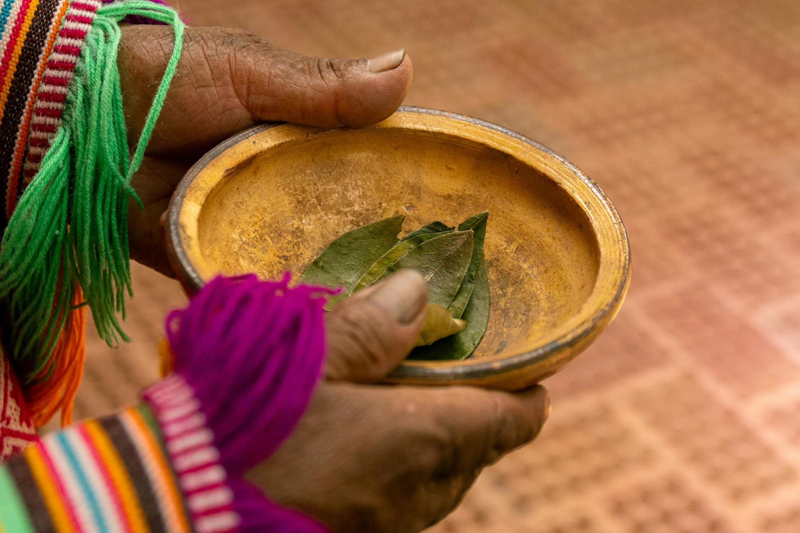

WANDER WOMEN
WANDER WOMEN
AREQUIPA Guide
Stay for the queso helado
Top Tourist Spots
Arequipa: The White City of Peru.
Monasterio de Santa Catalina
A masterpiece of colonial architecture, this monastery is a large complex of rooms, picturesque plazas, ornate fountains, and a maze of narrow, cobblestone streets.
Plaza de Armas
The main square of Arequipa, surrounded by historic buildings made from white volcanic stone, reflecting the city's nickname, "The White City."
Volcán Misti
An iconic 5,822-meter (19,101-foot) active volcano that offers trekking opportunities with panoramic views of Arequipa.
Yanahuara Viewpoint
A scenic spot offering panoramic views of Arequipa and its surrounding volcanoes, framed by traditional sillar arches.
Colca Canyon
One of the deepest canyons in the world, known for its breathtaking scenery and as a habitat for the Andean condor.
Basilica Cathedral of Arequipa
Situated on the Plaza de Armas, this imposing cathedral is renowned for its construction in white ashlar stone and its magnificent size. Visitors can explore its interior, which houses art and jewels from the early era.
Cultural Encounters
Arequipa, often referred to as the "White City," is a place where indigenous traditions blend seamlessly with Spanish influences, creating a unique cultural tapestry that permeates language, commerce, religion, attire, and festivals.
Language
Spanish is the predominant language spoken in Arequipa. However, indigenous languages like Quechua are also prevalent, especially in rural areas. This linguistic diversity reflects the region's rich history and multicultural heritage.
Shopping
Arequipa's markets, such as Mercado San Camilo, are bustling centers of commerce where vendors sell a variety of goods, including traditional textiles, pottery, and jewelry. The city is also famous for its "picanterías," traditional eateries serving spicy local dishes. These establishments have been recognized as Cultural Heritage of the Nation.
Sunshine in Arequipas
Arequipa, Peru, is renowned for its abundant sunshine, boasting approximately 300 sunny days each year, which equates to about 82% of the year. This consistent sunlight contributes to the city's vibrant atmosphere and is ideal for outdoor activities and exploration.
Natural Beauty
Surrounded by volcanoes like El Misti and Chachani, Arequipa offers breathtaking natural landscapes, including the Colca Canyon, one of the deepest canyons in the world, providing opportunities for trekking and wildlife observation.
Gastronomic Delights
Delight in Arequipa's rich culinary scene, where traditional flavors and unique dishes await. *All can be veganized or vegetarianized.*
To Eat
- Rocoto Relleno: A spicy stuffed pepper made from rocoto peppers native to the region, filled with a mixture of meat, butter, cream, and pecans, topped with melted cheese.
- Chupe de Camarones: A flavorful shrimp chowder combining shrimp, potatoes, corn, and a variety of spices, often enjoyed as a hearty soup.
- Adobo Arequipeño: A traditional pork stew marinated in chicha (fermented corn beverage) and spices, then slow-cooked to tender perfection.
- Queso Helado: Despite its name meaning 'frozen cheese,' this sweet treat is made from milk, coconut, vanilla, cloves, and cinnamon, offering a refreshing end to any meal.
- Cuy Chactado: A traditional dish featuring guinea pig, seasoned and fried until crispy, commonly served with potatoes and salad.
- Coca Tea (Mate de Coca):  An herbal infusion made from coca leaves, traditionally used to alleviate altitude sickness and aid digestion.
- Inca Kola: A sweet, bright yellow soda often referred to as 'Peru's national drink,' known for its unique flavor.
Restaurants
- Lounge del Brujo
- Satiba Therapy
- Kafi Wasi Cafe
- Prana Veagn Club
- Eco Brunch
Where to Stay
Explore Arequipa's diverse neighborhoods, each offering a unique blend of history, culture, and ambiance.
Vallecito
Located just south of the Plaza de Armas, Vallecito is a peaceful neighborhood known for its historic and artistic vibe. It's within walking distance to the main square, making it convenient for tourists.
Yanahuara
Situated northwest of the city center, Yanahuara offers tranquil streets and panoramic views of Arequipa. It's famous for its iconic viewpoint and colonial-era architecture.
Historical Center
Staying in the heart of Arequipa means being surrounded by colonial architecture, bustling markets, and vibrant street life. The Plaza de Armas is the main hub, offering easy access to various attractions.
Souvenir Ideas
Things to remember Arequipa by:
Alpaca Clothing
Arequipa offers a variety of alpaca wool garments, including sweaters, hats, scarves, and blankets. These items are lightweight, hypoallergenic, and warm, making them both practical and luxurious souvenirs.
Chullo Hats
Traditional Peruvian chullo hats, characterized by earflaps, are made from alpaca or sheep wool. They are practical accessories for cooler climates and reflect the region's cultural heritage.
Hand-Painted Ceramics
Colorful hand-painted ceramic items, such as bowls and figurines, are popular souvenirs in Arequipa. These pieces often feature traditional designs and vibrant colors, showcasing local artistry.
Silver Jewelry
Arequipa is known for its high-quality silver jewelry, including necklaces, bracelets, and earrings. These pieces often incorporate traditional designs and local gemstones, making them unique keepsakes.
Superfoods and Herbs
Arequipa's markets offer a variety of native superfoods and herbs, including maca powder, quinoa, and coca leaves. These items are popular for their health benefits and make unique culinary souvenirs.
Staying Safe
To do:
1: Have Fun
2: Stay Safe
Exercise Caution with Food and Drink
- Choose Reputable Eateries: Opt for dining at well-established restaurants or those recommended by trusted sources to minimize the risk of foodborne illnesses.
- Be Careful with Street Food: While street food is a significant part of Arequipa's culture, ensure that the food is prepared in hygienic conditions to avoid health issues.
- Drink Bottled Water: To prevent waterborne illnesses, it's advisable to consume bottled water and avoid ice in drinks.
Be Vigilant Against Common Tourist Scams
- Stay Alert in Public Areas: Petty crime, such as pickpocketing, can occur in crowded places. Keep your belongings secure and be cautious of distractions.
- Use Reputable Transportation Services: To avoid potential scams, use registered taxi services or ride-sharing apps, and agree on fares beforehand if meters are not available.
- Avoid Flashing Valuables: Refrain from displaying expensive items like jewelry, cameras, or electronics that might attract unwanted attention.
Prioritize Health and Wellness
- Acclimate to the Altitude: Arequipa is situated at 2,335 meters (7,661 feet) above sea level. To prevent altitude sickness, take it easy for the first day, stay hydrated, and consider drinking coca tea, which is traditionally used to alleviate symptoms.
- Stay Hydrated: The high altitude can lead to dehydration. Drink plenty of water throughout the day.
- Be Cautious with Alcohol and Smoking: Both can exacerbate altitude sickness. It's advisable to avoid alcohol and smoking, especially during the initial days of your visit.
Transportation Safety
- Use Reputable Ride-Sharing Services: When traveling by car, use reputable ride-sharing apps like Uber or 99. Avoid accepting rides from unmarked vehicles or unsolicited offers.
- Be Cautious with Taxi Services: If using taxis, ensure they are registered and use the meter. Agree on the fare beforehand if the meter is not available.
Stay Informed and Prepared
- Know Emergency Contacts: Keep a list of emergency contacts, including local authorities and your country's embassy or consulate.
- Trust Your Instincts: If a situation or area feels uncomfortable, trust your instincts and remove yourself from it. Prioritize your safety at all times.
Embassy and Contact Information
- Address: Avenida La Encalada cdra. 17 s/n Surco, Lima 33 Peru
- Phone: +51 (1) 618-2000
- Emergency After-Hours Phone: +51 (1) 618-2000
- Fax: +51 (1) 618-2724
- Email: LimaACS@state.gov
- Website: U.S. Embassy Lima
- Travel Information: U.S. Department of State: Peru Travel Information
Language
¿No hablas??? Español es el idioma oficial::
Practice
- ¿Dónde está...? (Where is...?)
- ¿Cuánto cuesta? (How much does it cost?)
- No entiendo. (I don't understand.)
- ¿Habla inglés? (Do you speak English?)
- ¡Buenos días! (Good morning!)
- ¡Buenas tardes! (Good afternoon!)
- ¡Buenas noches! (Good evening!)
- Gracias (Thank you)
- Por favor (Please)
- De nada (You're welcome)
- Perdón (Excuse me / Sorry)
- Duolingo: A free app to learn Spanish with interactive lessons. [Learn Spanish on Duolingo](https://www.duolingo.com/course/es/en/Learn-Spanish)
- Memrise: A free platform with courses in Spanish, focusing on vocabulary and pronunciation. [Learn Spanish with Memrise](https://www.memrise.com/course/2021572/spanish-1/)
- Rosetta Stone: Offers comprehensive Spanish courses with immersive learning methods. [Learn Spanish with Rosetta Stone](https://www.rosettastone.com/learn-spanish/)
- Busuu: A free language learning app that helps with speaking, listening, and reading Spanish. [Learn Spanish with Busuu](https://www.busuu.com/en)
Language Learning Resources: